lorenz_partial_additive_splitmode_p30_obsnoise001_top3nd_init15_autodim__lc_sweepProject: Lorenz_INDpartial_NDInitSweep_autodim_D1_NormTrue__JacobianODE
Launched: 2026-04-23T15:40:10Z
Completed: 2026-04-23T23:00:15Z
Outcome: complete_clean
Git: latent-JacobianODE @ ba8843f
Expected runs: 21
lorenz_partial_additive_splitmode_p30_obsnoise001_top3nd_init15_autodim__lc_sweepDescription
Lorenz partial additive coupling, obs_noise=0.01, top-3 n_delays {55, 60, 70}, traj_init_steps=15, prediction_steps=30, splitmode (reconstruction_mode=uniform + trajectory_loss_most_recent=true, both explicit). 21-run sweep over 7 LC weights {0, 1e-6, 1e-5, 1e-4, 1e-3, 1e-2, 1e-1}. n_target_dims auto via PCA (threshold=0.99), final_perm_identity=true, init_pca_basis=false. Submitted to ou_bcs_normal for fast turnaround.
Hypothesis
Reproduce the original top3nd LC sweep cleanly under explicit split mode, so downstream LC/n_delays analyses have a coherent dataset without mode-mixing artifacts. Best val traj should match the original sweep's best (~4e-4 at LC=1e-4, n_delays=60). Drops of LC=1 and LC=10 save 6 runs with no material signal loss.
Success criteria
Swept axes (8): data.train_test_params.delay_embedding_params.n_delays, model.encoder.n_input, model.n_target_dims, model.n_target_dims_pca_auto, model.n_target_dims_pca_cum_var, model.params.input_dim, model.params.output_dim, training.lightning.loop_closure_weight
Chosen run (by best_traj_loss): 0rqqb61r — traj_loss=0.00058, MASE=0.5906, R²=0.9984, LC loss=0.975, epoch=100.0
Swept-axis values at chosen run: data.train_test_params.delay_embedding_params.n_delays=55 · model.encoder.n_input=55 · model.n_target_dims=5 · model.n_target_dims_pca_auto=5 · model.n_target_dims_pca_cum_var=0.994855 · model.params.input_dim=5 · model.params.output_dim=25 · training.lightning.loop_closure_weight=0
Runs analyzed: 21 (expected 21)
| run_idx | run_id | data.train_test_params.delay_embedding_params.n_delays |
model.encoder.n_input |
model.n_target_dims |
model.n_target_dims_pca_auto |
model.n_target_dims_pca_cum_var |
model.params.input_dim |
model.params.output_dim |
training.lightning.loop_closure_weight |
best_traj_loss | best_MASE | R² | LC loss | epoch |
|---|---|---|---|---|---|---|---|---|---|---|---|---|---|---|
| 0 | 0rqqb61r |
55 | 55 | 5 | 5 | 0.994855 | 5 | 25 | 0 | 0.00058 | 0.5906 | 0.9984 | 0.975 | 100.0 |
| 1 | c62ykpp4 |
55 | 55 | 5 | 5 | 0.994855 | 5 | 25 | 1.0e-06 | 0.00058 | 0.5947 | 0.9984 | 0.808 | 100.0 |
| 2 | yqgr0b7r |
55 | 55 | 5 | 5 | 0.994855 | 5 | 25 | 1.0e-05 | 0.00058 | 0.5961 | 0.9984 | 0.420 | 102.0 |
| 10 | 8b68lv5p |
60 | 60 | 5 | 5 | 0.993171 | 5 | 25 | 1.0e-04 | 0.00058 | 0.5964 | 0.9984 | 0.145 | 111.0 |
| 7 | vn3ovm35 |
60 | 60 | 5 | 5 | 0.993171 | 5 | 25 | 0 | 0.00059 | 0.5939 | 0.9984 | 3.163 | 116.0 |
| 3 | 3lialebo |
55 | 55 | 5 | 5 | 0.994855 | 5 | 25 | 1.0e-04 | 0.00063 | 0.6139 | 0.9983 | 0.121 | 102.0 |
| 9 | hf46bvnl |
60 | 60 | 5 | 5 | 0.993171 | 5 | 25 | 1.0e-05 | 0.00066 | 0.6300 | 0.9981 | 0.870 | 100.0 |
| 8 | 7npe9leu |
60 | 60 | 5 | 5 | 0.993171 | 5 | 25 | 1.0e-06 | 0.00067 | 0.6315 | 0.9981 | 2.185 | 100.0 |
| 11 | 1wha1qoq |
60 | 60 | 5 | 5 | 0.993171 | 5 | 25 | 0.001 | 0.00069 | 0.6303 | 0.9980 | 0.032 | 100.0 |
| 14 | 95se126i |
70 | 70 | 6 | 6 | 0.994529 | 6 | 36 | 0 | 0.00078 | 0.6296 | 0.9979 | 2.542 | 101.0 |
| 15 | 60f6y5mi |
70 | 70 | 6 | 6 | 0.994529 | 6 | 36 | 1.0e-06 | 0.00079 | 0.6312 | 0.9979 | 1.888 | 101.0 |
| 4 | guygpvp6 |
55 | 55 | 5 | 5 | 0.994855 | 5 | 25 | 0.001 | 0.00080 | 0.6578 | 0.9978 | 0.021 | 100.0 |
| 16 | e0qb7y8q |
70 | 70 | 6 | 6 | 0.994529 | 6 | 36 | 1.0e-05 | 0.00083 | 0.6327 | 0.9978 | 0.667 | 101.0 |
| 18 | jyfqwrmp |
70 | 70 | 6 | 6 | 0.994529 | 6 | 36 | 0.001 | 0.00086 | 0.6581 | 0.9977 | 0.027 | 101.0 |
| 17 | n8muccby |
70 | 70 | 6 | 6 | 0.994529 | 6 | 36 | 1.0e-04 | 0.00088 | 0.6422 | 0.9976 | 0.128 | 101.0 |
| 12 | 8htjvaxn |
60 | 60 | 5 | 5 | 0.993171 | 5 | 25 | 0.01 | 0.00113 | 0.7106 | 0.9968 | 0.004 | 100.0 |
| 5 | u55o28gm |
55 | 55 | 5 | 5 | 0.994855 | 5 | 25 | 0.01 | 0.00117 | 0.7450 | 0.9968 | 0.003 | 100.0 |
| 19 | s7sm2d9v |
70 | 70 | 6 | 6 | 0.994529 | 6 | 36 | 0.01 | 0.00128 | 0.7548 | 0.9966 | 0.005 | 101.0 |
| 13 | 5nrsizlf |
60 | 60 | 5 | 5 | 0.993171 | 5 | 25 | 0.1 | 0.00169 | 0.8261 | 0.9954 | 0.001 | 111.0 |
| 20 | c5mfpwp7 |
70 | 70 | 6 | 6 | 0.994529 | 6 | 36 | 0.1 | 0.00221 | 0.8975 | 0.9941 | 0.001 | 107.0 |
| 6 | icx55lk3 |
55 | 55 | 5 | 5 | 0.994855 | 5 | 25 | 0.1 | 0.00279 | 0.9805 | 0.9924 | 0.001 | 104.0 |
| Criterion | Verdict | Note |
|---|---|---|
| All 21 runs train without divergence | Unknown | |
| Best val traj_loss within 2x of the original sweep's 3.98e-4 winner | Unknown | |
| C1+C2+C3 pass rate at LC ∈ {1e-4, 1e-3, 1e-2} is comparable or better than original | Unknown | |
| Winner cell's λ-spectrum consistent with prior runs at similar config | Unknown |
Automated verdicts use simple numeric-threshold parsing and may mis-classify qualitative criteria. The Discussion section below takes precedence.
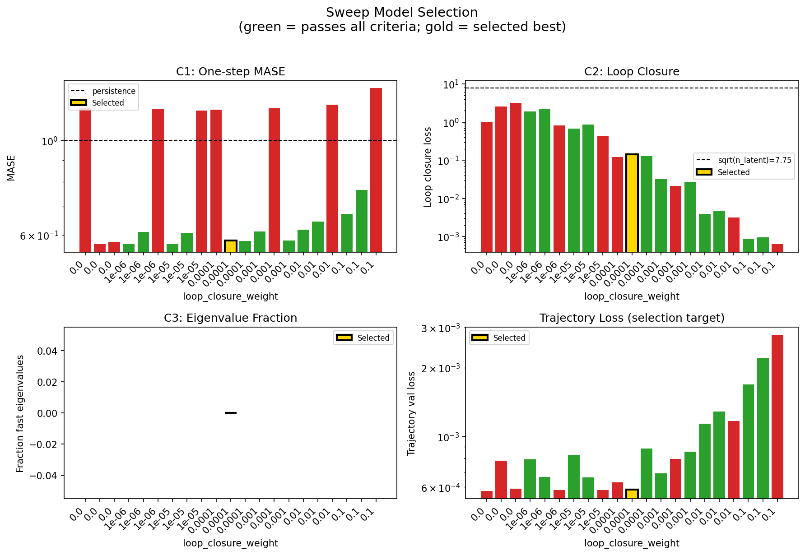
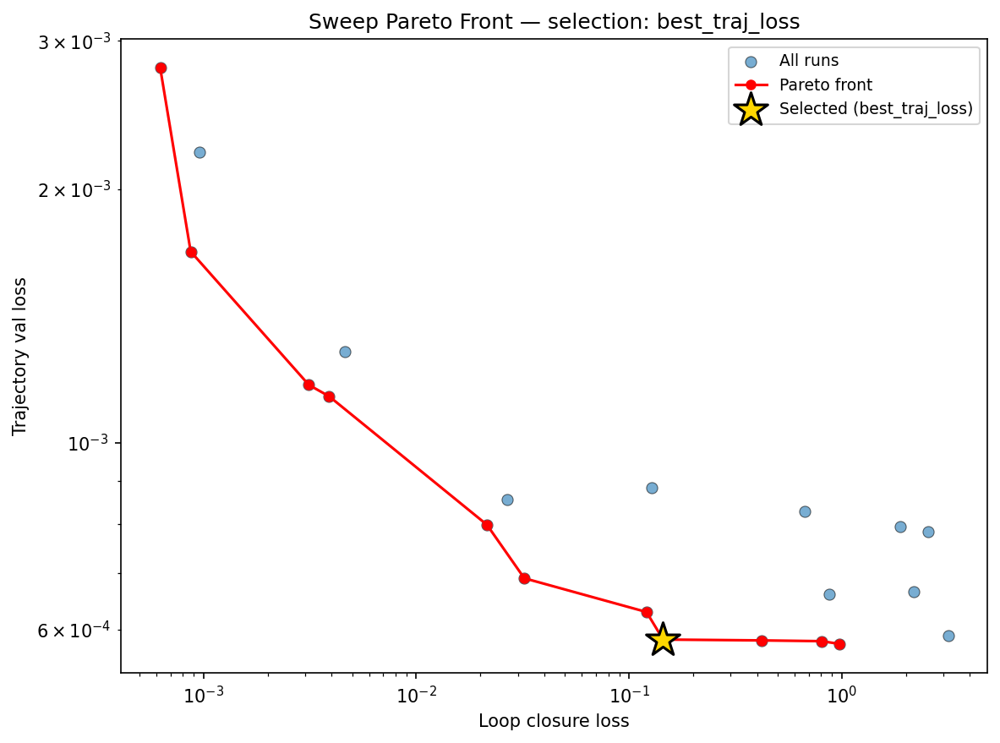
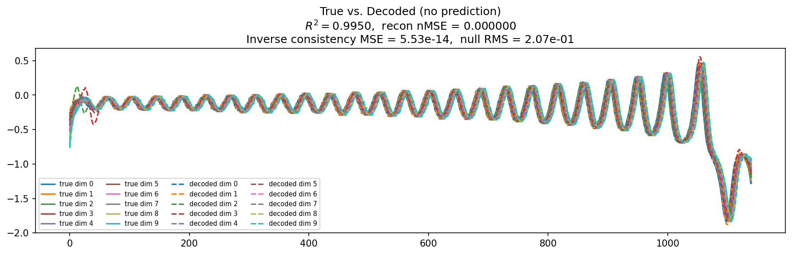
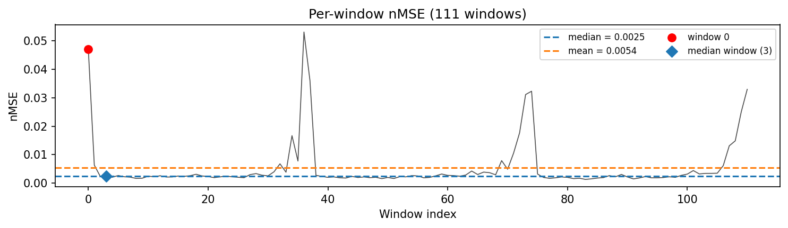
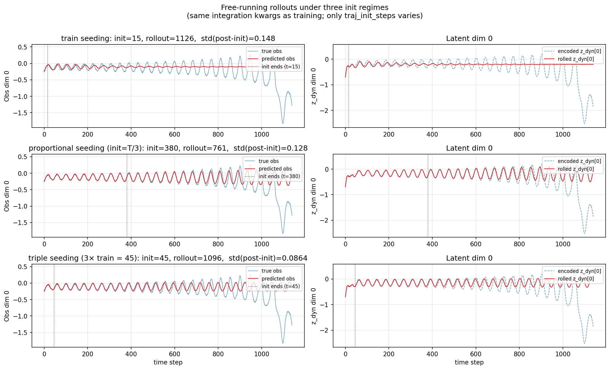
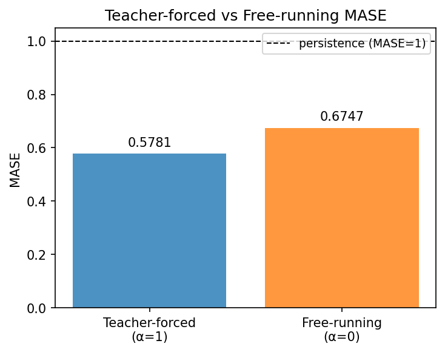
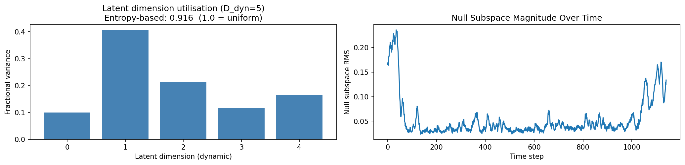
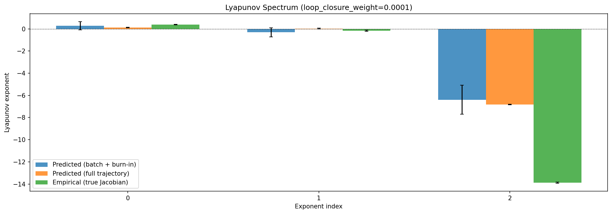
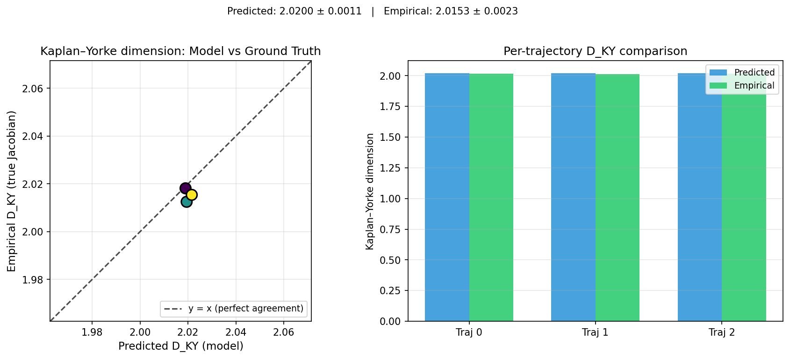
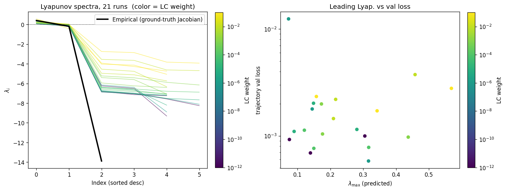
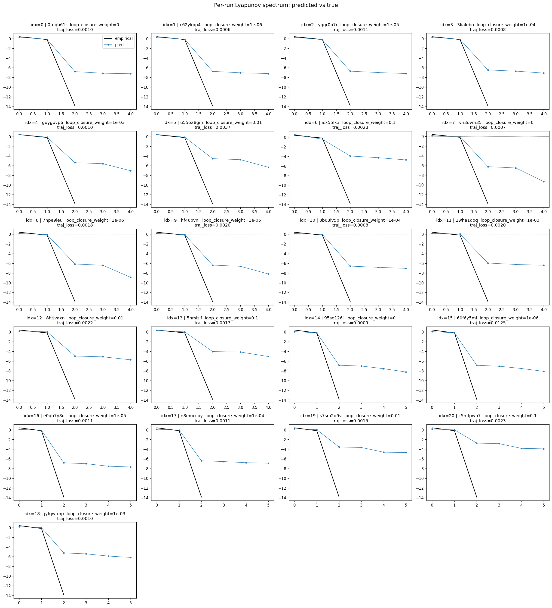
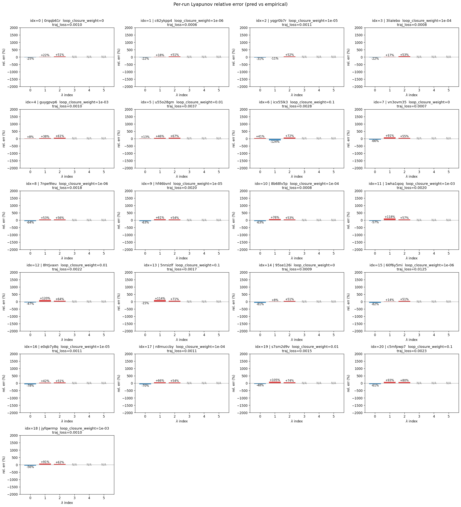
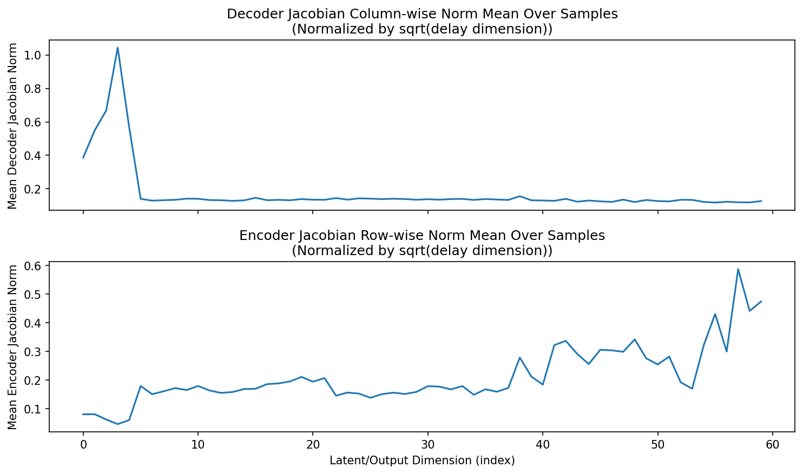
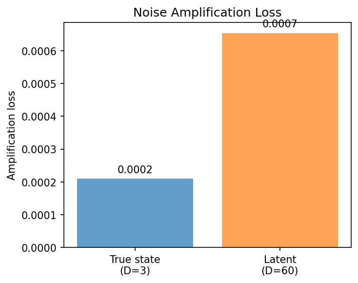
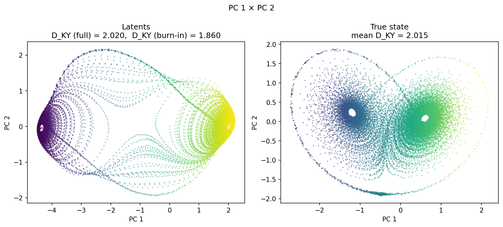
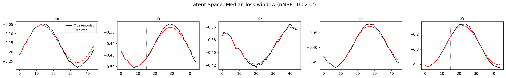
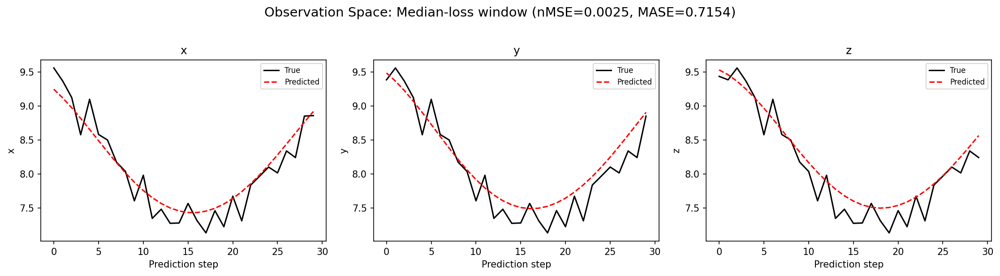
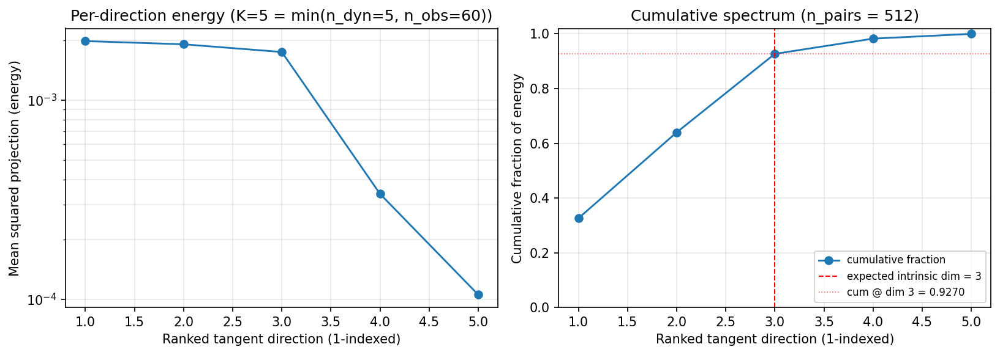
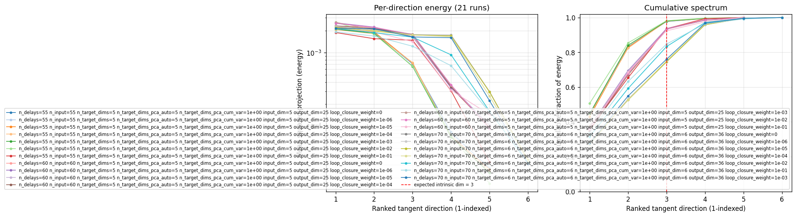
(to be written)
run_analytics stdoutrun_analyticsNo run_id provided — selecting best run from group 'lorenz_partial_additive_splitmode_p30_obsnoise001_top3nd_init15_autodim__lc_sweep' ...
Found 21 total runs in JacobianODE/Lorenz_INDpartial_NDInitSweep_autodim_D1_NormTrue__JacobianODE (group=lorenz_partial_additive_splitmode_p30_obsnoise001_top3nd_init15_autodim__lc_sweep)
All runs (state, loop_closure_weight, tangent_entropy_weight, kl_dyn_weight):
0rqqb61r: state=finished, lc=0.0, te=0.0, kl_dyn=0.0
c62ykpp4: state=finished, lc=1e-06, te=0.0, kl_dyn=0.0
yqgr0b7r: state=finished, lc=1e-05, te=0.0, kl_dyn=0.0
3lialebo: state=finished, lc=0.0001, te=0.0, kl_dyn=0.0
guygpvp6: state=finished, lc=0.001, te=0.0, kl_dyn=0.0
u55o28gm: state=finished, lc=0.01, te=0.0, kl_dyn=0.0
icx55lk3: state=finished, lc=0.1, te=0.0, kl_dyn=0.0
vn3ovm35: state=finished, lc=0.0, te=0.0, kl_dyn=0.0
7npe9leu: state=finished, lc=1e-06, te=0.0, kl_dyn=0.0
hf46bvnl: state=finished, lc=1e-05, te=0.0, kl_dyn=0.0
8b68lv5p: state=finished, lc=0.0001, te=0.0, kl_dyn=0.0
1wha1qoq: state=finished, lc=0.001, te=0.0, kl_dyn=0.0
8htjvaxn: state=finished, lc=0.01, te=0.0, kl_dyn=0.0
5nrsizlf: state=finished, lc=0.1, te=0.0, kl_dyn=0.0
95se126i: state=finished, lc=0.0, te=0.0, kl_dyn=0.0
60f6y5mi: state=finished, lc=1e-06, te=0.0, kl_dyn=0.0
e0qb7y8q: state=finished, lc=1e-05, te=0.0, kl_dyn=0.0
n8muccby: state=finished, lc=0.0001, te=0.0, kl_dyn=0.0
s7sm2d9v: state=finished, lc=0.01, te=0.0, kl_dyn=0.0
c5mfpwp7: state=finished, lc=0.1, te=0.0, kl_dyn=0.0
jyfqwrmp: state=finished, lc=0.001, te=0.0, kl_dyn=0.0
slurm_timeout_min not found in any run config — falling back to 180 min
Including 0rqqb61r (lc=0.0): use_all_runs=True (state=finished)
Including c62ykpp4 (lc=1e-06): use_all_runs=True (state=finished)
Including yqgr0b7r (lc=1e-05): use_all_runs=True (state=finished)
Including 3lialebo (lc=0.0001): use_all_runs=True (state=finished)
Including guygpvp6 (lc=0.001): use_all_runs=True (state=finished)
Including u55o28gm (lc=0.01): use_all_runs=True (state=finished)
Including icx55lk3 (lc=0.1): use_all_runs=True (state=finished)
Including vn3ovm35 (lc=0.0): use_all_runs=True (state=finished)
Including 7npe9leu (lc=1e-06): use_all_runs=True (state=finished)
Including hf46bvnl (lc=1e-05): use_all_runs=True (state=finished)
Including 8b68lv5p (lc=0.0001): use_all_runs=True (state=finished)
Including 1wha1qoq (lc=0.001): use_all_runs=True (state=finished)
Including 8htjvaxn (lc=0.01): use_all_runs=True (state=finished)
Including 5nrsizlf (lc=0.1): use_all_runs=True (state=finished)
Including 95se126i (lc=0.0): use_all_runs=True (state=finished)
Including 60f6y5mi (lc=1e-06): use_all_runs=True (state=finished)
Including e0qb7y8q (lc=1e-05): use_all_runs=True (state=finished)
Including n8muccby (lc=0.0001): use_all_runs=True (state=finished)
Including s7sm2d9v (lc=0.01): use_all_runs=True (state=finished)
Including c5mfpwp7 (lc=0.1): use_all_runs=True (state=finished)
Including jyfqwrmp (lc=0.001): use_all_runs=True (state=finished)
Found 21 effectively-done sweep runs:
loop_closure_weight=0.0, tangent_entropy_weight=0.0, kl_dyn_weight=0.0 -> run_id=0rqqb61r
loop_closure_weight=0.0, tangent_entropy_weight=0.0, kl_dyn_weight=0.0 -> run_id=95se126i
loop_closure_weight=0.0, tangent_entropy_weight=0.0, kl_dyn_weight=0.0 -> run_id=vn3ovm35
loop_closure_weight=1e-06, tangent_entropy_weight=0.0, kl_dyn_weight=0.0 -> run_id=60f6y5mi
loop_closure_weight=1e-06, tangent_entropy_weight=0.0, kl_dyn_weight=0.0 -> run_id=7npe9leu
loop_closure_weight=1e-06, tangent_entropy_weight=0.0, kl_dyn_weight=0.0 -> run_id=c62ykpp4
loop_closure_weight=1e-05, tangent_entropy_weight=0.0, kl_dyn_weight=0.0 -> run_id=e0qb7y8q
loop_closure_weight=1e-05, tangent_entropy_weight=0.0, kl_dyn_weight=0.0 -> run_id=hf46bvnl
loop_closure_weight=1e-05, tangent_entropy_weight=0.0, kl_dyn_weight=0.0 -> run_id=yqgr0b7r
loop_closure_weight=0.0001, tangent_entropy_weight=0.0, kl_dyn_weight=0.0 -> run_id=3lialebo
loop_closure_weight=0.0001, tangent_entropy_weight=0.0, kl_dyn_weight=0.0 -> run_id=8b68lv5p
loop_closure_weight=0.0001, tangent_entropy_weight=0.0, kl_dyn_weight=0.0 -> run_id=n8muccby
loop_closure_weight=0.001, tangent_entropy_weight=0.0, kl_dyn_weight=0.0 -> run_id=1wha1qoq
loop_closure_weight=0.001, tangent_entropy_weight=0.0, kl_dyn_weight=0.0 -> run_id=guygpvp6
loop_closure_weight=0.001, tangent_entropy_weight=0.0, kl_dyn_weight=0.0 -> run_id=jyfqwrmp
loop_closure_weight=0.01, tangent_entropy_weight=0.0, kl_dyn_weight=0.0 -> run_id=8htjvaxn
loop_closure_weight=0.01, tangent_entropy_weight=0.0, kl_dyn_weight=0.0 -> run_id=s7sm2d9v
loop_closure_weight=0.01, tangent_entropy_weight=0.0, kl_dyn_weight=0.0 -> run_id=u55o28gm
loop_closure_weight=0.1, tangent_entropy_weight=0.0, kl_dyn_weight=0.0 -> run_id=5nrsizlf
loop_closure_weight=0.1, tangent_entropy_weight=0.0, kl_dyn_weight=0.0 -> run_id=c5mfpwp7
loop_closure_weight=0.1, tangent_entropy_weight=0.0, kl_dyn_weight=0.0 -> run_id=icx55lk3
n_dims=55, n_latent=55, n_dyn=5, dt=0.0150
run=0rqqb61r: DiagnosticMetrics(one_step_mase=1.1891452074050903, loop_closure_loss=0.9748320579528809, fast_eigenvalue_fraction=0.0, trajectory_val_loss=0.0005766486283391714) (from W&B history)
run=95se126i: DiagnosticMetrics(one_step_mase=0.5707321763038635, loop_closure_loss=2.5424742698669434, fast_eigenvalue_fraction=0.0, trajectory_val_loss=0.0007837111479602754) (from W&B history)
run=vn3ovm35: DiagnosticMetrics(one_step_mase=0.5786312222480774, loop_closure_loss=3.1634833812713623, fast_eigenvalue_fraction=0.0, trajectory_val_loss=0.0005895926733501256) (from W&B history)
run=60f6y5mi: DiagnosticMetrics(one_step_mase=0.5707058310508728, loop_closure_loss=1.8883360624313354, fast_eigenvalue_fraction=0.0, trajectory_val_loss=0.00079434021608904) (from W&B history)
run=7npe9leu: DiagnosticMetrics(one_step_mase=0.6096858382225037, loop_closure_loss=2.185295820236206, fast_eigenvalue_fraction=0.0, trajectory_val_loss=0.0006657392368651927) (from W&B history)
run=c62ykpp4: DiagnosticMetrics(one_step_mase=1.1884151697158813, loop_closure_loss=0.8079937100410461, fast_eigenvalue_fraction=0.0, trajectory_val_loss=0.0005810314905829728) (from W&B history)
run=e0qb7y8q: DiagnosticMetrics(one_step_mase=0.5713366270065308, loop_closure_loss=0.666877806186676, fast_eigenvalue_fraction=0.0, trajectory_val_loss=0.0008281354676000774) (from W&B history)
run=hf46bvnl: DiagnosticMetrics(one_step_mase=0.6056013703346252, loop_closure_loss=0.8701761364936829, fast_eigenvalue_fraction=0.0, trajectory_val_loss=0.000660823832731694) (from W&B history)
run=yqgr0b7r: DiagnosticMetrics(one_step_mase=1.1769206523895264, loop_closure_loss=0.41955310106277466, fast_eigenvalue_fraction=0.0, trajectory_val_loss=0.0005822500679641962) (from W&B history)
run=3lialebo: DiagnosticMetrics(one_step_mase=1.1819878816604614, loop_closure_loss=0.12081500887870789, fast_eigenvalue_fraction=0.0, trajectory_val_loss=0.0006292749312706292) (from W&B history)
run=8b68lv5p: DiagnosticMetrics(one_step_mase=0.5829904079437256, loop_closure_loss=0.14466121792793274, fast_eigenvalue_fraction=0.0, trajectory_val_loss=0.0005836131167598069) (from W&B history)
run=n8muccby: DiagnosticMetrics(one_step_mase=0.5808069705963135, loop_closure_loss=0.12789782881736755, fast_eigenvalue_fraction=0.0, trajectory_val_loss=0.0008840002701617777) (from W&B history)
run=1wha1qoq: DiagnosticMetrics(one_step_mase=0.6119097471237183, loop_closure_loss=0.03220299631357193, fast_eigenvalue_fraction=0.0, trajectory_val_loss=0.000690071377903223) (from W&B history)
run=guygpvp6: DiagnosticMetrics(one_step_mase=1.190284252166748, loop_closure_loss=0.021478012204170227, fast_eigenvalue_fraction=0.0, trajectory_val_loss=0.0007988655706867576) (from W&B history)
run=jyfqwrmp: DiagnosticMetrics(one_step_mase=0.5828893184661865, loop_closure_loss=0.026793699711561203, fast_eigenvalue_fraction=0.0, trajectory_val_loss=0.0008555331151001155) (from W&B history)
run=8htjvaxn: DiagnosticMetrics(one_step_mase=0.617713212966919, loop_closure_loss=0.003893892979249358, fast_eigenvalue_fraction=0.0, trajectory_val_loss=0.0011348839616402984) (from W&B history)
run=s7sm2d9v: DiagnosticMetrics(one_step_mase=0.6447139382362366, loop_closure_loss=0.004609482828527689, fast_eigenvalue_fraction=0.0, trajectory_val_loss=0.0012828323524445295) (from W&B history)
run=u55o28gm: DiagnosticMetrics(one_step_mase=1.2145006656646729, loop_closure_loss=0.0031278508249670267, fast_eigenvalue_fraction=0.0, trajectory_val_loss=0.0011707613011822104) (from W&B history)
run=5nrsizlf: DiagnosticMetrics(one_step_mase=0.6728679537773132, loop_closure_loss=0.0008702377090230584, fast_eigenvalue_fraction=0.0, trajectory_val_loss=0.0016861670883372426) (from W&B history)
run=c5mfpwp7: DiagnosticMetrics(one_step_mase=0.7662049531936646, loop_closure_loss=0.0009594112052582204, fast_eigenvalue_fraction=0.0, trajectory_val_loss=0.002213618252426386) (from W&B history)
run=icx55lk3: DiagnosticMetrics(one_step_mase=1.3269736766815186, loop_closure_loss=0.0006258613429963589, fast_eigenvalue_fraction=0.0, trajectory_val_loss=0.0027858703397214413) (from W&B history)
Ranking method: best_traj_loss
Best run ID: 8b68lv5p
Best loop_closure_weight: 0.0001
Best tangent_entropy_weight: 0.0
Best kl_dyn_weight: 0.0
Best traj loss: 0.000584
Criteria applied: ['C1', 'C2', 'C3']
Surviving: 12 / 21
Auto-selected run_id: 8b68lv5p
======================================================================
PARETO FRONTIER RUNS (11 runs)
======================================================================
Run ID LC Loss Traj Val Loss
------------ -------------- --------------
icx55lk3 0.000626 0.002786
5nrsizlf 0.000870 0.001686
u55o28gm 0.003128 0.001171
8htjvaxn 0.003894 0.001135
guygpvp6 0.021478 0.000799
1wha1qoq 0.032203 0.000690
3lialebo 0.120815 0.000629
8b68lv5p 0.144661 0.000584 <-- selected
yqgr0b7r 0.419553 0.000582
c62ykpp4 0.807994 0.000581
0rqqb61r 0.974832 0.000577
======================================================================
RANKING METHOD COMPARISON (over 12 survivors)
======================================================================
Method Run ID LC Loss Traj Val Loss
---------------------- ------------ -------------- --------------
best_traj_loss 8b68lv5p 0.144661 0.000584 <-- active
pareto_knee 1wha1qoq 0.032203 0.000690
geo_rank 8b68lv5p 0.144661 0.000584
minimax_rank 1wha1qoq 0.032203 0.000690
geo_log_score 8b68lv5p 0.144661 0.000584
minimax_log_score jyfqwrmp 0.026794 0.000856
======================================================================
Loading run 8b68lv5p from JacobianODE/Lorenz_INDpartial_NDInitSweep_autodim_D1_NormTrue__JacobianODE ...
Loading checkpoint epoch=111-step=22400.ckpt...
Train dataset shape: torch.Size([24112, 45, 60])
Validation dataset shape: torch.Size([7672, 45, 60])
Test dataset shape: torch.Size([3288, 45, 60])
Train trajectories dataset shape: torch.Size([22, 1141, 60])
Validation trajectories dataset shape: torch.Size([7, 1141, 60])
Test trajectories dataset shape: torch.Size([3, 1141, 60])
Loading checkpoint epoch=111-step=22400.ckpt...
Computing reconstruction ...
Computing MASE ...
Teacher-forced MASE: 0.5781
Free-running MASE: 0.6747
Computing latent utilization ...
Entropy-based utilization: 0.916
Null subspace mean RMS: 6.691358e-02
Computing Lyapunov exponents ...
Computing full-trajectory Lyapunov (3 test trajs, T=1141) ...
Predicted Lyapunov exponents (batch+burn-in, 128 windowed trajs):
λ_1 = +0.2776 ± 0.3702
λ_2 = -0.3060 ± 0.4132
λ_3 = -6.3959 ± 1.3022
λ_4 = -6.7289 ± 0.8482
λ_5 = -6.9195 ± 0.7620
Predicted Lyapunov exponents (full-length, 3 test trajs):
λ_1 = +0.1143 ± 0.0284
λ_2 = +0.0222 ± 0.0383
λ_3 = -6.8266 ± 0.0377
λ_4 = -6.9635 ± 0.0351
λ_5 = -7.0833 ± 0.0101
Empirical Lyapunov exponents (mean ± std):
λ_1 = +0.3846 ± 0.0251
λ_2 = -0.1716 ± 0.0444
λ_3 = -13.8799 ± 0.0398
Mean KY dim (predicted): 2.020 ± 0.001
Mean KY dim (empirical): 2.015 ± 0.002
Mean KY dim (burn-in): 1.860 ± 0.391
Computing prediction windows ...
Windows: 111 — nMSE min=0.0013, median=0.0025, mean=0.0054, max=0.0530
Computing long-trajectory free-running rollouts ...
Computing encoder/decoder Jacobians ...
encoder_jacobian: (128, 60, 60)
decoder_jacobian: (128, 60, 60)
Computing amplification loss ...
Amplification loss — True state: 0.000210
Amplification loss — Latent: 0.000654
Computing tangent space spectrum ...